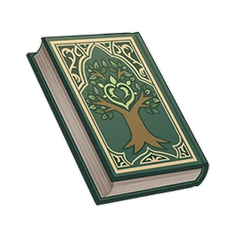

The Folio of Foliage¶

Author: Sunitha Cosamvi
Info
- Version 1: Original text of this book.
- Version 2: Modified version of the original text, resulting from Rukkhadevata’s removal from the Irminsul during the Archon quest Where the Boat of Consciousness Lies.
Vol. 1¶
Note
A biography written by researchers from ancient Sumeru. It records the trail of the Dendro Archon during the times of calamity.
...I don't dare presume to mention her true name, let alone overstep my bounds as an earthly being to judge her divinity. I, Sunitha Cosamvi, a servant of shallow intellect, have merely recorded the stories heard from the sages who followed her in the past and nowhere else. These words are as true and evident as my own existence.
When the moon's shadow shattered, hordes of beasts emerged from the deepest depths of the abyss and devoured living creatures by the thousands. Of those she created, none could escape their destined annihilation. The goodness, peace, and wisdom she had bestowed — all perished before this pure malice without exception. Under that sneering waning moon, the black tide of decay surged over the deserts and through the valleys, turning clear springs once interlaced with roses into puddles of filth, defiling the earth as mortals trembled with despair. The sages called it The Black Tide, for it was a dark flood that swallowed up fields, villages, and cities.
She witnessed this all with her own eyes and wept bitterly for the sorrow and suffering of the living. Her tears fell to the ground, dispelling the foul flames and giving birth to blossoms abounding with sweet dew from the once barren and scorched earth. However, the root cause of the blight still lay beneath the earth, and the shadow of death continued to obscure the once luminous moonlight. Thus, she vowed to save the creatures of the earth, embarking on a final journey together with her followers.
...I dare not presume to mention her true name, let alone overstep my bounds as an earthly being to judge the divinity she displayed then. I, Sunitha Cosamvi, a servant of shallow intellect, have merely recorded the stories heard from the sages who followed her in the past and nowhere else. These words are as true and evident as my own existence.
When the moon's shadow shattered, hordes of beasts emerged from the deepest depths of the abyss and devoured living creatures by the thousands. Of those she created, none could escape their destined annihilation. The goodness, peace, and wisdom she had bestowed — all perished before this pure malice without exception. Under that sneering waning moon, the black tide of decay surged over the deserts and through the valleys, turning clear springs once interlaced with roses into puddles of filth, defiling the earth as mortals trembled with despair. The sages called it The Black Tide, for it was a dark flood that swallowed up fields, villages, and cities.
She witnessed this all with her own eyes and wept bitterly for the sorrow and suffering of the living. Her tears fell to the ground, dispelling the foul flames and giving birth to blossoms abounding with sweet dew from the once barren and scorched earth. However, the root cause of the blight still lay beneath the earth, and the shadow of death continued to obscure the once luminous moonlight. Thus, she vowed to save the creatures of the earth, embarking on a radiant journey together with her servants.
Vol. 2¶
Note
A biography written by researchers from ancient Sumeru. It records the trail of the Dendro Archon during the times of calamity.
She followed the dappled light and shade until she entered a long-since ruined forest. With each step she took, a thousand Nilotpala Lotuses bloomed in her wake. Every calamity — raging fires, death, and destruction — all receded before the wonder of her wisdom. Fragrant flowers bloomed and proliferated again in this dead domain and remain as abundant today as the gravel in the Ardravi River. Even hurricanes abated into gentle exhalations before her singing, causing the bells on her lapels to sway as they rang out elegantly. All the spirits, their envoys, humans, and the inhuman rejoiced and praised her name, for she is indeed the most sagacious and the most merciful.
In the depths of the forest, she collected grass to use as an instrument, picked flowers for a crown, and played a flawless tune with a Karrenay. In an instant, thousands of demonic troops were reduced to dust and scattered to the four winds, never to be found again. She gently brushed away the tears of the forest creatures and soothed their anguish, just as she once blew the wind of life across the barren sea of sand, like the emissary of an eternal oasis from time immemorial.
But this land remained broken, its heart devoured by evil spirits and monsters who made it their dwelling — a cavern of the damned where neither sun, moon, nor fire shine. The dust they took for treasure and the sludge served as their delicacies, like birds clad in feathers but unable to soar in the skies. She decided that she would go to the dark cave and enter that evil place that none might depart, continuing on this path of no restitution, this sojourn of utmost purity and mercy.
She stepped alone to that emptied earthly heart and softly touched its timeless face, becoming the immortal Gaokerena and the earth itself. Every thread of spiritual knowledge and every sweet-smelling plant is her undying will. Another flourishing sea of flowers rolled around her, jade in color, rosy in fragrance and dewy as heavenly raiment. The songs of a hundred birds surrounded her, praising the life that she had at last reclaimed, like a mortal trading their old clothes for fresh ones, casting off their original shackles, and ascending to the eternal temple.
She followed the dappled light and shade until she entered a long-since ruined forest. With each step she took, a thousand Nilotpala Lotuses bloomed in her wake. Every calamity — raging fires, death, and destruction — all receded before the wonder of her wisdom. Fragrant flowers bloomed and proliferated again in this dead domain and remain as abundant today as the gravel in the Ardravi River. Even hurricanes abated into gentle exhalations before her singing, causing the bells on her lapels to sway as they rang out elegantly. All the spirits, their envoys, humans, and the inhuman rejoiced and praised her name, for she is indeed the most sagacious and the most merciful.
In the depths of the forest, she collected grass to use as an instrument, picked flowers for a crown, and played a flawless tune with a Karrenay. In an instant, thousands of demonic troops were reduced to dust and scattered to the four winds, never to be found again. She gently brushed away the tears of the forest creatures and soothed their anguish, just as she once blew the wind of life across the barren sea of sand, like the emissary of an eternal oasis from time immemorial.
But this land remained broken, its heart devoured by evil spirits and monsters who made it their dwelling — a cavern of the damned where neither sun, moon, nor fire shine. The dust they took for treasure and the sludge served as their delicacies, like birds clad in feathers but unable to soar in the skies. So she made a great wish, vowing that she would go into those cankered, rotted courts, setting forth on her sojourn to cleanse the withered land.
All the spirits, their envoys, humans, and the inhuman all watched as she entered the hollowed heart of the mortal world and touched its timeless face. Thus did all the goodness, peace, and wisdom that she had granted unto the world become the immortal Gaokerena, indeed, become the very earth itself. This was the moment when the pure lotuses would bloom. A flourishing sea of flowers rolled all about her, and like jade it appeared, rosy in fragrance and dewy as heavenly raiment. The songs of a hundred birds surrounded her, praising the youth that she had reclaimed. The years lost by the children of humanity were nowhere to be found again, like the wind that flows through the forest, but she returned in spite of all things, showing her incandescent divinity to the world once more, just as she had in the beginning when she sowed the first seeds into the desert sands. It is just as the hymn says:
The path was made straight long ago by the path of a great vow; to break all chains and relieve all woes, and all things sure to know.
The auspice of its radiant light drove foes and demons out; and amidst the rotting smoke did holy wisdom newly sprout.
Behold wisdom's returning light, unclouded near or far; like sunlight through the morning sky, the moon through dome of stars.
The lotuses do richly bloom in wisdom's radiant blaze; amidst this paradise of faith, I lift my hands in praise.
Vol. 3¶
Note
A biography written by researchers from ancient Sumeru. It records the trail of the Dendro Archon during the times of calamity.
Many people had never before heard her voice, or if they had, they did not know it was her. Those who disseminate well because they hear words from far and wide are as rare as those who teach well because they understand the truth. Her will is all-pervading and as indestructible as intellect itself. None can destroy the indestructible, for there has never been an absence of existence in this world, nor the existence of absence.
It must be known that the forest was once overrun by a black tide of beasts. The moonlight spilling over the still water was as shattered as the dream it reflected, and the endless labyrinth too collapsed in the burning flames. The lord of all animals let out a furious roar with its dying breath, then fell protecting all that she had entrusted to him. But the memories themselves did not shatter, collapse, nor fall. Like the wisdom she left behind, they were unborn, imperishable, eternal, and ancient.
Following her guidance, the princess of the kingdom of dreams gently snapped off the white branches and rebuilt the verdant hunting grounds from the withered fallen leaves, while the children of the forest, having set forth their ambition, were able to sleep peacefully in the end once more. No matter how much they suffer, the hunter always finds their way home — This is the first and final promise she made to the children, and to the adults who were once children. Perhaps the moon dust scattered over the world will one day fade away like morning dew, but for those things that remain in memories — all those sweet dreams and thoughts — their purity will remain as unchanged as a pearl that even the grinding and whittling of a thousand winds and sands may not alter.
Many have never heard her voice, and even those who heard knew not that it was her — and still she heard their wishes. And many have never seen her face, and even those who saw her knew not that it was her — and still she watched over their dreams. For few are those who tell well the tales they hear from afar, and rare are those who teach the truth they have divined with clarity. Even today, her will permeates all, and she dwells in the Sanctuary of Surasthana watching over the dreams of all who live in this land — just as she did when she returned and commanded the queen of the realm of dreams to break the pure white branches and rebuild the viridescent hunting ground from amidst the withered leaves.
The forest was once overrun by a tide of black beasts, and the endless labyrinth crumbled amidst the flames. The lord of all animals let out a furious roar with its dying breath, then fell protecting all that she had entrusted to him. But her lovely dream could never be snatched away by any woe — for so long as people wait for the next night's dream expectantly, then there shall be new memories, tranquil flowers that bloom betwixt morning dew and moon dust.
This is the promise that she made to the dreamers, the first and final oath. For memories are like pearls — tossed about by wind and sand though they may be, their true, pure color shall never be changed. All beautiful dreams are like the newborn grass — though they may be consumed by sudden flame, the warm spring breeze shall bring them swaying to life again.